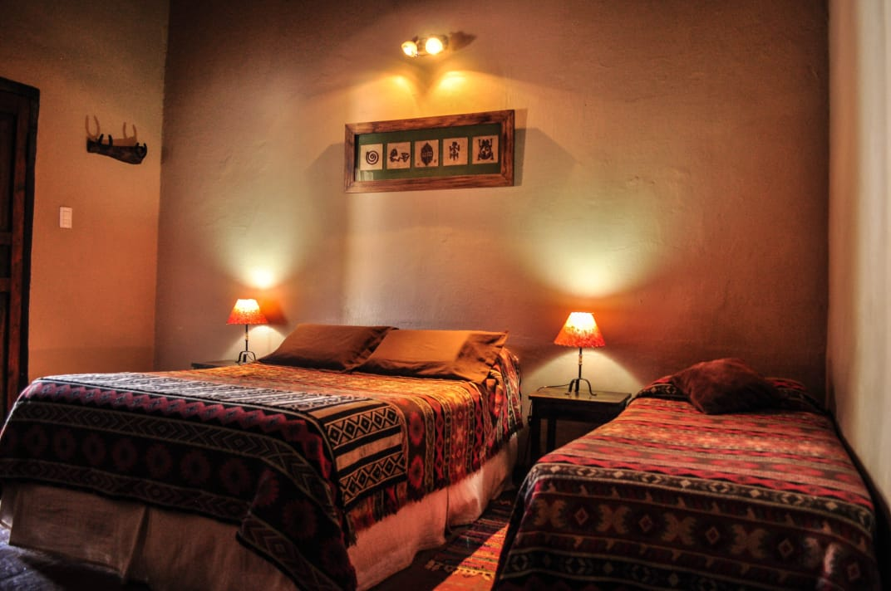
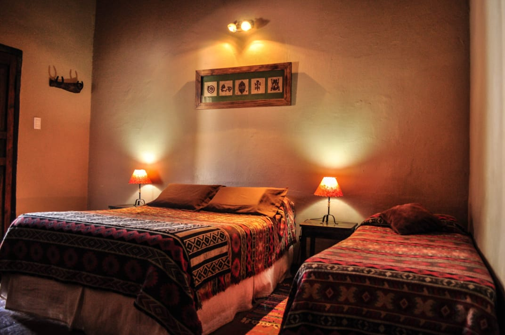

| Inicio | Información ▼ | Acceso | Galeria | Turismo ▼ | Contactanos |
|

| Alojamiento | Direccion | Telefono |
|---|---|---|
| Hotel Santé | 25 de mayo 53 SUR. A dos cuadras y media de la plaza principal | 3837-471798 jaledcabur@hotmail.com.ar - santehostal@live.com |
| Hotel Nicolas | Pte. Perón 231 | 03837-420028 |
| 03837-420028 | 25 de Mayo Esq. Moreno | Moreno 03837-421088 |
| Las Pircas Hotel Boutique | Anillaco | 3835 483176 |
| Residencia el Viajante | Av. Illia s/n | 03837-420830 |
| Residencia San Francisco | Moreno 784 | 03837-475201 |
| Cabañas del Indio | Mariano Moreno N°165 | 2477506301 / 3837404832 |
| 2477506301 / 3837404832 | Copacabana | 383 4562629 |
| Hospedaje Huguito | Copiapó número 86 | Vanessa: 383 748 6840 |
| Cabañas burro con pan | calle tucumán prolongación oeste sin número | Vanessa: 383 748 6840 |
El hostal esta compuesto por 10 habitaciones de las cuales 7 se encuentran en la parte inferior y 3 en 1 piso acceso por escalera. todas las habitaciones cuentan con, baño privado, tv, wifi, aire acondicionado frio calor. heladera frigobar. Nuestros baños son amplios, y contamos con una habitacion adaptada para personas con discapacidad motris ( siempre consultar disponibilidad) los baños estan provistos de bidet, secador de pelo. en nuestras instalaciones contamos con wi-fi en todo el establecimiento. servicio de estacionamiento, patio, bar kincho con asadores y acceso a una cocina de uso comun.


Casagrande Hotel de Adobe, es un hotel boutique con Piscina, Jacuzzi, Restaurante y Winery. Ubicado a 200mts de la plaza principal, forman parte de La Ruta del Adobe con un casco historico del año 1890.
.JPG) 
